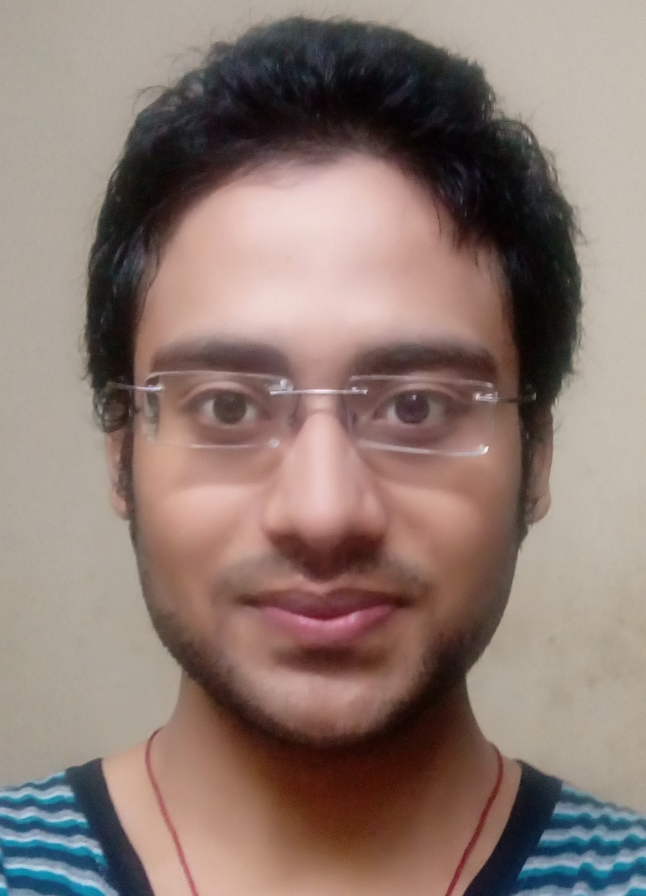

|  |
Siddhartha Vibhu Pharswan
Master of Technology*
|
I completed my Bachelor's degree in Mechanical Engineering from Dr. A.P.J. Abdul Kalam Technical University (AKTU) in 2015. I secured 3rd rank in 1st year of my B.Tech in Mahamaya Technical University (Now A.P.J. Abdul Kalam Technical University) in the whole NCR region, and 17th rank in final year of my B.Tech in Uttar Pradesh. In 2016, I joined Solid Mechanics and Design speciali -sation in Mechcanical Engineering Deptt. of Indian Institute of Technology, Kanpur (IIT-K) as a Master's student, where during my course I received the Academic Excellence Award 2016-17. As my Master's Thesis, I worked on Machine Learning based robot grasping under Prof. Laxmidhar Behera (Deptt. of Electrical Engineering, IITK) and Prof. Ashish Dutta (Department of Mechanical Engineering).
Currently, I am at Software Specialist designation at PTC Software India Private Limited, Pune. At PTC, my main work deals with the product enhancement, coding (lots in Node.js, Java). I am here working in the Internet of Things (IOT) section for products like ThingWorx (TWX).